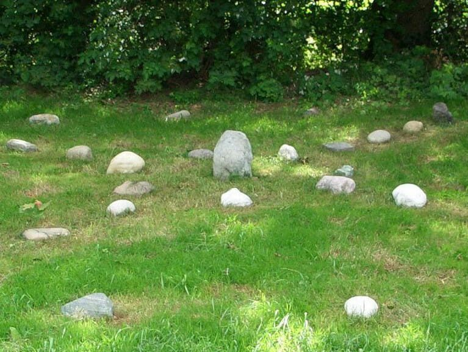

Das Medizinrad
Naturheilung für Körper, Geist und Seele — entdecke die Kraft des Medizinrads in dir.
Das Medizinrad ist ein magischer Kreis, der die ganze Welt in sich vereint. Es ist ein Kraftort, an dem jeder Energie tanken und Heilung finden kann. Vadim Tschenze
Das Medizinrad ist ein Kreis aus Steinen, der die Verbundenheit mit dem Leben widerspiegelt und der Heilung der Menschen, der Erde und der Natur dient. Es zeigt uns eine innere Ordnung und den Weg durchs Labyrinth des Lebens. Es hilft uns dabei, uns mit den Kräften des Universums zu verbinden und uns selbst besser zu verstehen. Wir lernen, uns in wechselseitiger Beziehung mit dem Kosmos zu erkennen und das weise Geflecht des Lebens zu verstehen.
Kursbeschreibung
Tauche ein in die Welt der Naturheilung und lerne einen ganzheitlich naturbezogenen Ansatz zur Prozessbegleitung kennen. In diesem 1,5-jährigen Kurs wirst du durch ritualgestützte Begleitung und den Einsatz von Lebensrädern — wie dem Medizinrad nach Sun Bear oder dem 4-Schilde-System — sowie vielen anderen Methoden die heilende Kraft der Natur erfahren. Profitiere von meinen jahrelangen Erfahrungen im Bereich Medizinradwissen, Übergangsritualen, Counciltechniken, Wachstumsarbeit und naturbasierten Therapieansätzen.
Dieser Kurs eignet sich für Menschen jeden Alters, die Resilienztraining oder prozessbezogene Wegbegleitung in ihrem Leben oder in ihrer Arbeit suchen.
Aufbau
- 8 Präsenzveranstaltungen zu jeweils drei Tagen
- 7 interaktive Studienabende per Videokonferenz
- 4,5 Stunden Einzelsupervision für jede Teilnehmerin und jeden Teilnehmer
Die Themen der Präsenzmodule führen vom einführenden Ritual über die vier Himmelsrichtungen und Jahreszeitenschilde — Süden und Sommerschild, Westen und Herbstschild, Norden und Winterschild, Osten und Frühlingsschild — zu Initiationen und der Balance der Schilde, zur Arbeit mit dem Medizinrad und den ganzheitlichen Aspekten der Aufstellungsarbeit, bis hin zum Heilen mit dem Rad, zur Integration und zum Ausblick.
Entdecke die Natur als Heilerin und lerne, wie du ihre heilende Kraft in deinem Leben oder deiner Arbeit nutzen kannst.
